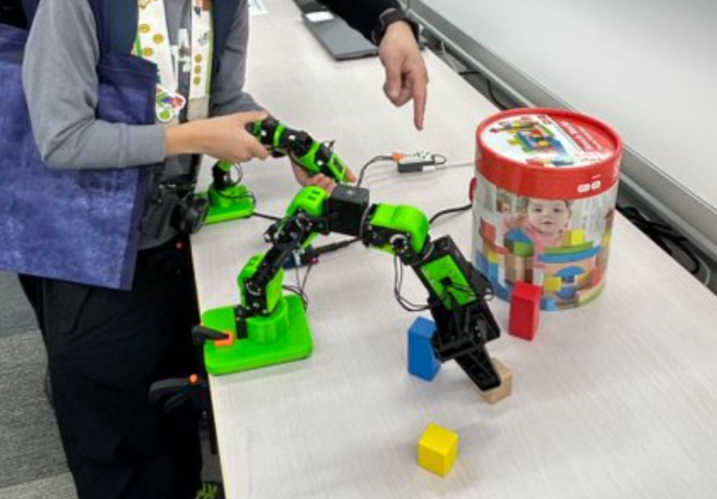

Maki
Tamura
田 村 茉 希
テクノロジーを単体の技術としてではなく、
社会課題を解決する仕組みとして実装する——。
人とロボットが共に働く未来の設計に関心を寄せています。
Keio University, SFC — Kanagawa, Japan

— Maki Tamura
テクノロジーを単体の技術としてではなく、
社会課題を解決する仕組みとして実装する——。
人とロボットが共に働く未来の設計に関心を寄せています。
総合政策学部で、テクノロジーを単体の技術として捉えるのではなく、社会課題を解決するための仕組みとして実装することを学んでいます。
特に関心があるのは、人手不足が深刻化する清掃・飲食・物流などの現場において、サービスロボットが単なる省人化ツールではなく、人の働き方や顧客体験を変える存在になるための導入設計です。
ロボットの性能だけでなく、現場でどう運用され、人とどう協働するか——その接続点をデザインすることに、研究と実践の両面から取り組んでいます。
テクノロジーを社会実装する視点から、サービスロボットの導入設計と人間中心設計を研究。 現場での運用、人との協働、顧客体験の変化を含めた、技術と社会の接続を考察しています。
高校時代の卒業論文として、地球環境の変化と異常気象の関係性について調査・考察を行いました。
主に小学生を対象にロボット制作の講師を担当。生徒がテキストを見ながらロボットを組み立て、動作を確認し、 うまく動かない場合には原因を一緒に考えながら改善できるようサポートすることを心がけています。 子どもたちが「なぜ動かないのか」を自分の言葉で説明できるよう、問いかけ方を工夫しています。
ファミリーレストラン「ガスト」でのアルバイト経験を通じて、ピークタイムには配膳・下膳・注文対応・会計などの業務が重なり、 従業員の負担が大きくなる現場の実情を体感しました。一方で、すべての業務を機械化すればよいわけではなく、 お客様への気配りや臨機応変な対応は、人だからこそ価値を発揮できる部分であると実感。 この現場経験が、サービスロボットの導入設計への関心の原点になっています。

「現場に定着するロボット導入の仕組みをつくる」という目標に向け、 SFC万学博覧会2025の学生スタッフとして、イベントの企画段階から携わりました。
特に力を入れたのは、特別企画「ロボット×ヒト」の「共発達型」ロボット実現の議論を来場者に分かりやすく伝えるための資料制作です。 専門用語をかみ砕くために、登壇者とも議論を重ね、伝え方を練り上げました。 結果、当日は多くの来場者から質問をいただき、アンケートで「非常に分かりやすかった」との評価をいただきました。
また、企画準備の過程で、ロボットの「繊細な操縦」を可能にする技術の実際のデータに触れ、 これらから得られる「自然なデータ」こそが現場の業務フローや従業員の動きのデータと組み合わさった時に 初めて価値を発揮すると確信しました。
日本ロボット工業会主催・隔年開催の国際ロボット展に来場。 スマートコミュニティロボット、物流システム・ロボット、サービスロボットの最新事例を視察し、 産業現場での社会実装の現状と課題について理解を深めました。
大学のバドミントンサークルに所属。継続的な活動を通じてチームワークと体力づくりに取り組んでいます。
お問い合わせ・ご連絡はこちらから